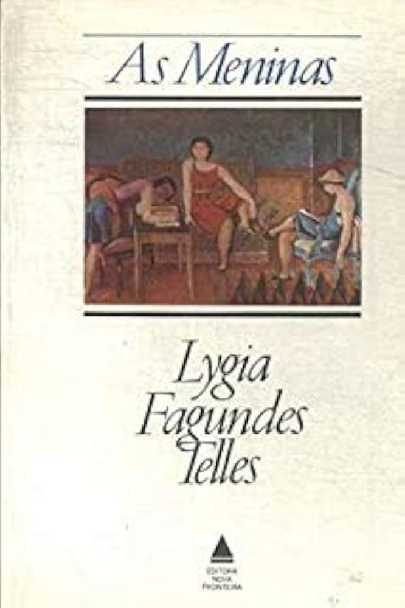

AS MENINAS NO CINEMA (1995)
O aclamado romance de Lygia Fagundes Telles ganhou vida nas telas em uma adaptação marcante dirigida por Emiliano Ribeiro.

A transposição do universo denso e psicológico do livro para a linguagem audiovisual concretizou-se em 1995. Dirigido por Emiliano Ribeiro, o longa-metragem assumiu o difícil desafio de traduzir a narrative fragmentada e os fluxos de consciência de Lygia em imagens, reconstruindo a atmosfera claustrofóbica do pensionato de freiras em São Paulo durante a ditadura militar.
O filme foca no entrelaçamento dos destinos e das angústias das três jovens protagonistas: Adriana Esteves interpreta a militante Lia, Drica Moraes dá vida à introspectiva Lorena e Claudia Liz encarna a trágica Ana Clara. A produção foi elogiada por preservar o tom intimista dos diálogos originais e a tensão política que permeia a convivência das personagens.
ASSISTA À OBRA COMPLETA:
A adaptação cinematográfica completa de 1995 está disponível no YouTube para consulta e estudo.